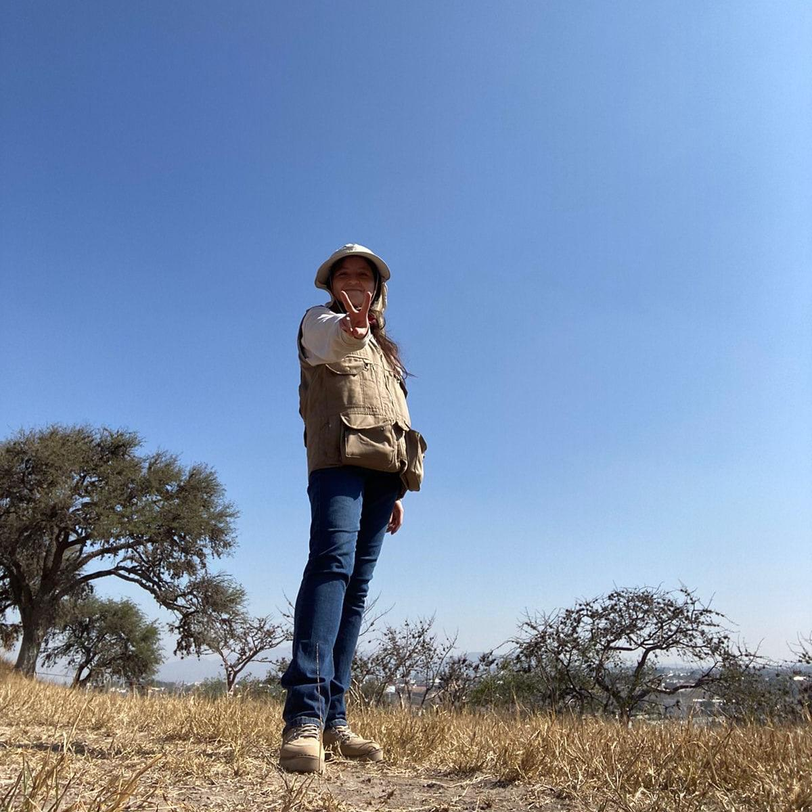

Hi, my name is Janette, but my nickname is Jattora. I love learning, reading, and technology. I'm currently learning japanese and coding but I'm still an
amateur, so I'm starting a routine where I can study and write some code everyday to get better on both skills.

Summary
"I am a Geophysical Engineer (BSc) specialized in geoelectrical methods for subsurface exploration. My research and professional work focus on the application of Vertical
Electrical Soundings (VES) using Second Potential Differences for groundwater exploration and site characterization. I am passionate about interdisciplinary science and staying
at the forefront of emerging international trends in technology."
Also, I believe it is important to make science accesible for every one, and the way I can do it is publishing information on the web. This is what I want to do!
Education
- BSc in Geophysical Engineer | UNAM
Work experience
- My thesis was about the caracerization of the table level at Cantera in REPSA UNAM. The metodology used was the Potential Second Differences.
- The Cantera is part of the natural reservoir in Ciudad Universitaria (CU) in Mexico City.
- I'm currently working as a Professor Assistant at the School of Engineering in CU.
- Here I help teaching the subjects of Prospección Eléctrica y Fundamentos de Teoría Electromagnética.
Skills
- Working with data in the geophysics field led me to the programming world.
Technical Skills
- Geophysical Exploration: Expertise in Vertical Electrical Sounding (VES) and Geoelectrical Characterization.
- Specialized Methods: Advanced application of Second Potential Differences for groundwater exploration and subsurface mapping.
- Scientific Communication: Experienced in technical writing and presenting research at international conferences (UGM).
Languages
- Spanish: Native.
- English: Advanced (IELTS C1 Certified).
- Japanese: Intermediate
Software & Tools
- Python
- Matlab
- HTML5
- CSS
- JavaScript
- Res2DInv
- QGIS
- Field Equipment: Syscal
Awards, certifications & other achievements
- 2023|Speaker at the UGM Annual Meeting (Puerto Vallarta)
Application of Vertical Electrical Soundings (VES) with Second Potential Differences in Groundwater Exploration.
- 2025|BSc Thesis
"Geoelectrical Characterization of the 'Cantera Oriente' Using Vertical Electrical Soundings (VES) and Second Potential Differences."
Focus: Groundwater exploration, structural geology, and advanced geoelectrical data processing.
- 2025|Specialized Training
Geophysics and Other Sciences: Scope and Limitations of Geophysical Methods.
- 2025|Intersemestral Course
"Frontiers: Emerging International Voices In Science and Technology"
Completed an intensive intersemestral program focused on international trends in scientific and technological innovation.
- 2025|IELTS Academic English Certificate | Level C1 (Advanced)
International English Language Testing System
Contact Info
* My email: janettetovarj@gmail.com
* My LinkedIn Profile: LinkedIn
© Janette Tovar|All Rights Reserved